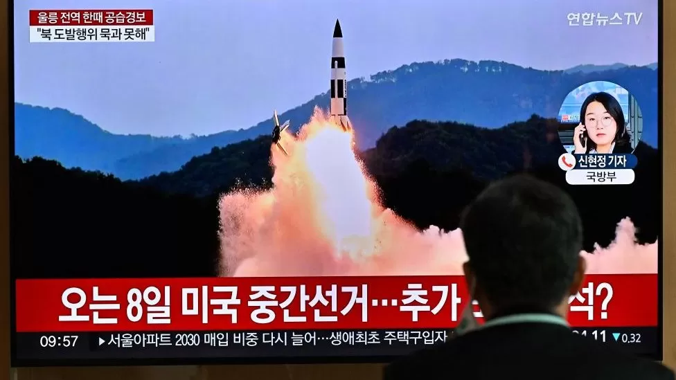

China Covid: Area around world's biggest iPhone plant locked down
Chinese authorities have locked down a district in Zhengzhou city - which is home to the world's largest iPhone factory - under the country's strict coronavirus measures.
The lockdown started on Wednesday and is set to last for seven days.
The move may have an impact on production of the new iPhone 14, which is made at Foxconn's plant in the city.
Chinese people and businesses are continuing to grapple with President Xi Jinping's rigid zero-Covid policy.
Latest news

By Tessa Wong in Seoul and Yvette Tan in Singapore The ICBM launch, the North's seventh this year, sparked an alert in Japan - but fell short, landing in the sea.
Tensions are escalating amid fears the North will soon conduct a nuclear test.
By Tessa Wong in Seoul and Yvette Tan in Singapore The ICBM launch, the North's seventh this year, sparked an alert in Japan - but fell short, landing in the sea.
Tensions are escalating amid fears the North will soon conduct a nuclear test.
By Tessa Wong in Seoul and Yvette Tan in Singapore The ICBM launch, the North's seventh this year, sparked an alert in Japan - but fell short, landing in the sea.
Tensions are escalating amid fears the North will soon conduct a nuclear test.
By Tessa Wong in Seoul and Yvette Tan in Singapore The ICBM launch, the North's seventh this year, sparked an alert in Japan - but fell short, landing in the sea.
Tensions are escalating amid fears the North will soon conduct a nuclear test.